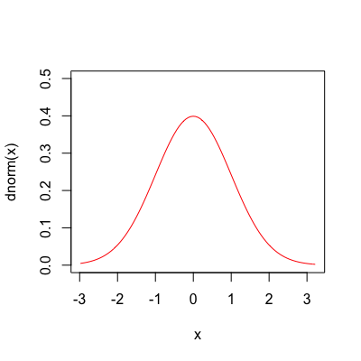
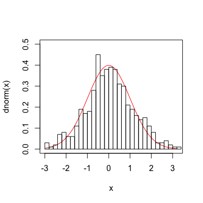
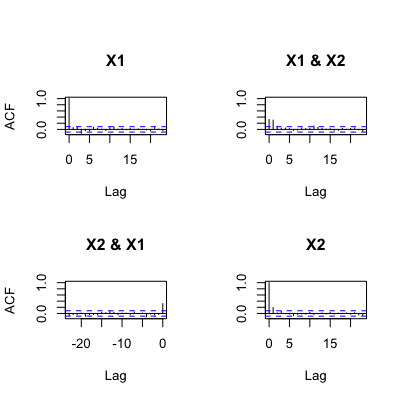
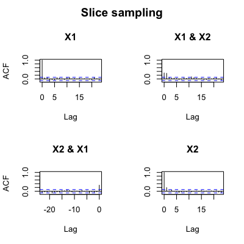
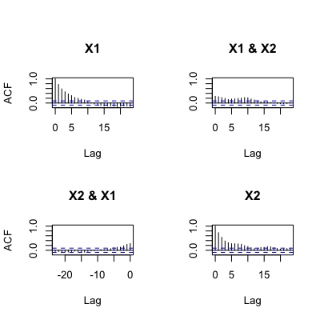
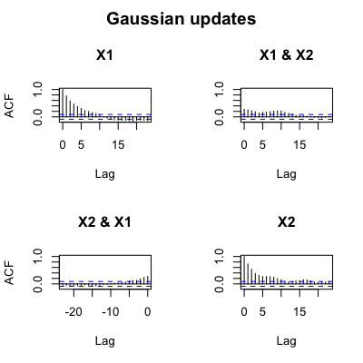

mcmc(lik, x.init, nsteps, ...) "mcmc"(lik, x.init, nsteps, w, prior=NULL, sampler=sampler.slice, fail.value=-Inf, lower=-Inf, upper=Inf, print.every=1, control=list(), save.file, save.every=0, save.every.dt=NULL, previous=NULL, previous.tol=1e-4, keep.func=TRUE, ...)sampler.slice(lik, x.init, y.init, w, lower, upper, control) sampler.norm(lik, x.init, y.init, w, lower, upper, control)
make.prior for more
information. If no prior is given, unbounded (and therefore
“improper”) priors are used for all parameters, which can
cause the MCMC to fail in some situations.sampler.slice (the default, and generally
recommended), and sampler.norm (Gaussian updates, and for
illustrative purposes mostly).x.init).x.init).NULL to turn off checking.print.every generations. Set this to 0 to disable
printing.save.file. By default this is 0, which prevents saving
occuring. Low nonzero values of this will slow things down, but
may be useful during long runs.lubridate Period object (e.g., minutes(10)).mcmc run, perhaps only
partly completed. The sampler will continue from the end of this
chain until the total chain has nsteps points.previous samples. If the
difference is greater than previous.tol then mcmc will
not continue.get.likelihood.likx.init.Run a simple-minded MCMC using slice samples (Neal 2003) for independent updating of each variable.
There are two samplers implemented: a slice sampler (Neal 2003) and a basic Gaussian sampler. In general, only the slice sampler should be used; the Gaussian sampler is provided for illustration and as a starting point for future samplers.
For slice sampling (sampler.slice), the tuning parameter w
affects how many function evaluations are required between sample
updates, but in almost all cases it does not affect how fast the
MCMC ``mixes'' (Neal 2003). In particular, w is not analagous
to the step sizes used in conventional Metropolis-Hastings updaters that
use some fixed kernel for updates (see below). Ideally, w would
be set to approximately the width of the high probability region. I
find that chosing the distance between the 5% and 95% quantiles of the
marginal distributions of each parameter works well, computed from this
preliminary set of samples (see Examples). If a single value is given,
this is shared across all parameters.
For the Gaussian updates (sampler.norm), the tuning parameter
w is the standard deviation of the normal distribution centred on
each parameter as it is updated.
For both samplers, if a single value is given, this is shared across all
parameters. If a vector is given, then it must be the same length as
w, and parameter i will use w[i].
If the MCMC is stopped by an interrupt (Escape on GUI versions of R, Control-C on command-line version), it will return a truncated chain with as many points as completed so far.
This is far from the most efficient MCMC function possible, as it was designed to work with likelihood functions that are relatively expensive to compute. The overhead for 10,000 slice samples is on the order of 5s on a 2008 Mac Pro (0.0005 s / sample).
The sampler function sampler.norm and sampler.slice should
not generally be called directly (though this is possible), but exist
only to be passed in to mcmc.
Neal R.M. 2003. Slice sampling. Annals of Statistics 31:705-767.
## To demonstrate, start with a simple bivariate normal. The function ## 'make.mvn' creates likelihood function for the multivariate normal ## distribution given 'mean' (a vector) and 'vcv' (the variance ## covariance matrix). This is based on mvnorm in the package ## mvtnorm, but will be faster where the vcv does not change between ## calls. make.mvn <- function(mean, vcv) { logdet <- as.numeric(determinant(vcv, TRUE)$modulus) tmp <- length(mean) * log(2 * pi) + logdet vcv.i <- solve(vcv) function(x) { dx <- x - mean -(tmp + rowSums((dx %*% vcv.i) * dx))/2 } } ## Our target distribution has mean 0, and a VCV with positive ## covariance between the two parameters. vcv <- matrix(c(1, .25, .25, .75), 2, 2) lik <- make.mvn(c(0, 0), vcv) ## Sample 500 points from the distribution, starting at c(0, 0). set.seed(1) samples <- mcmc(lik, c(0, 0), 500, 1, print.every=100)100: {1.0077, 1.9016} -> -4.13752 200: {-1.8865, -0.8726} -> -3.54693 300: {2.7495, -0.0213} -> -5.79567 400: {0.3627, 0.0973} -> -1.71633 500: {-1.4309, 0.6186} -> -3.36750## The marginal distribution of V1 (the first axis of the ## distribution) should be a normal distribution with mean 0 and ## variance 1: curve(dnorm, xlim=range(samples$X1), ylim=c(0, .5), col="red")
hist(samples$X1, 30, add=TRUE, freq=FALSE)
plot(X2 ~ X1, samples, pch=19, cex=.2, col="#00000055", asp=1)## The estimated variance here matches nicely with the true VCV: (These ## all look much better if you increase the number of sampled points, ## say to 10,000) var(samples[2:3])X1 X2 X1 1.2324329 0.3168768 X2 0.3168768 0.8023992## The above uses slice sampling. We can use simple Gaussian updates ## instead. This performs updates with standard deviation '1' in each ## direction. Unlike slice sampling, the 'w' parameter here will ## matter a great deal in determining how fast the chain will mix. samples.norm <- mcmc(lik, c(0, 0), 500, 1, print.every=100, sampler=sampler.norm)100: {0.2925, 0.2411} -> -1.71384 200: {0.2392, -0.7726} -> -2.18304 300: {1.0165, 0.9843} -> -2.55494 400: {-0.7744, 0.7343} -> -2.57660 500: {-0.5452, 0.4239} -> -2.02740## This *appears* to run much faster than the slice sampling based ## approach above, but the effective sample size of the second ## approach is much lower. The 'effectiveSize' function in coda says ## that for 10,000 samples using slice sampling, the effective sample ## size (equivalent number of independent samples) is about 8,500, but ## for the Gaussian updates is only 1,200. This can be seen by ## comparing the autocorrelation between samples from the two ## different runs. op <- par(oma=c(0, 0, 2, 0)) acf(samples[2:3])
title(main="Slice sampling", outer=TRUE)
acf(samples.norm[2:3])
title(main="Gaussian updates", outer=TRUE)
## The autocorrelation is negligable after just 2 samples under slice ## sampling, but remains significant for about 15 with Gaussian ## updates. ## <strong>Not run</strong>: # ## Next, a diversitree likelihood example. This example uses a 203 # ## species phylogeny evolved under the BiSSE model. This takes a # ## more substantial amount of time, so is not evaluated by default. # pars <- c(0.1, 0.2, 0.03, 0.03, 0.01, 0.01) # set.seed(2) # phy <- tree.bisse(pars, max.t=60, x0=0) # # ## First, create a likelihood function: # lik <- make.bisse(phy, phy$tip.state) # lik(pars) # # ## This produces about a sample a second, so takes a while. The "upper" # ## limit is a hard upper limit, above which the sampler will never let # ## the parameter go (in effect, putting a uniform prior on the range # ## lower..upper, and returning the joint distribution conditional on the # ## parameters being in this range). # tmp <- mcmc(lik, pars, nsteps=100, w=.1) # # ## The argument 'w' works best when it is about the width of the "high # ## probability" region for that parameter. This takes the with of the # ## 90% quantile range. The resulting widths are only slightly faster # ## than the first guess. Samples are generated about 1/s; allow 15 # ## minutes to generate 1000 samples. # w <- diff(sapply(tmp[2:7], quantile, c(.05, .95))) # out <- mcmc(lik, pars, nsteps=1000, w=w) # # ## You can do several things with this. Look for candidate ML points: # out[which.max(out$p),] # # ## Or look at the marginal distribution of parameters # profiles.plot(out["lambda0"], col.line="red") # # ## Or look at the joint marginal distribution of pairs of parameters # plot(lambda0 ~ mu0, out) # ## <strong>End(Not run)</strong>
make.bd, make.bisse,
make.geosse, and make.mkn, all of which
provide likelihood functions that are suitable for use with this
function. The help page for make.bd has further
examples of using MCMC, and make.bisse has examples of
using priors with MCMC.